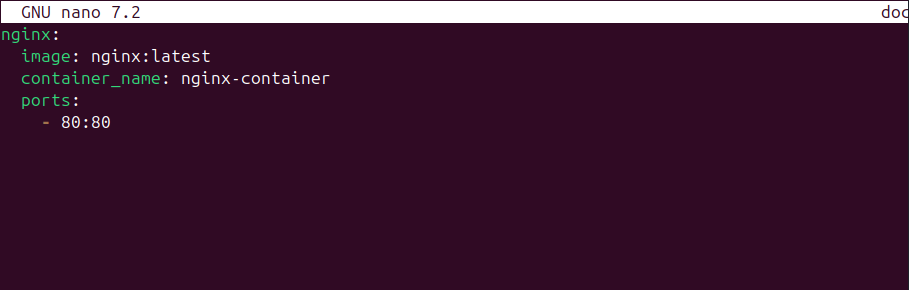
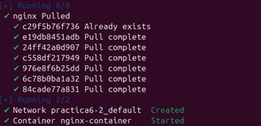
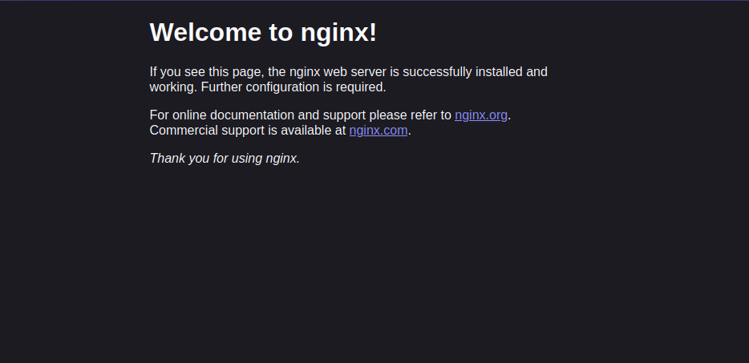
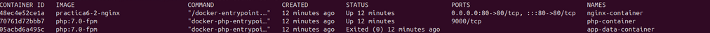
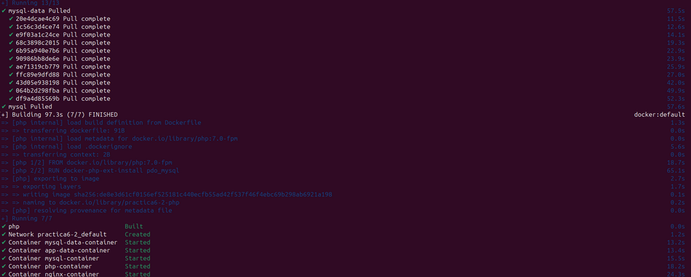

Práctica 6.2 - Despliegue de una aplicación PHP con Nginx y MySQL usando Docker y docker-compose
Introducción
¿Que es docker-compose?
Docker Compose es una herramienta versátil que te permite definir y gestionar aplicaciones multi-contenedor de forma sencilla. Con Docker Compose, puedes describir la configuración de tu entorno de desarrollo en un archivo YAML, especificando los servicios, volúmenes y redes necesarios para tu aplicación.
Para usarlo deberemos seguir los siguientes pasos:
-
Definir el entorno de nuestra aplicación con un Dockerfile para que pueda usarse en cualquier lugar.
-
Definir los servicios que componen la aplicacion en docker-compose.yml.
-
Ejecutar docker compose up -d para que Docker lanza la aplicación.
Instalación de docker-compose
Proceso de dockerización de Nginx+PHP+Mysl
- Estrucutra de directorios
En esta practica vamos a seguir la siguiente estructura de directorios para que todas las rutas que usemos funcionen:
/usuario/Documentos/practica6-2/
├── docker-compose.yml
├── nginx
│ ├── default.conf
│ └── Dockerfile
├── php
│ └── Dockerfile
└── www
└── html
└── index.php
cd ~/Documentos
mkdir practica6-2
cd practica6-2
touch docker-compose.yml
mkdir nginx
touch nginx/default.conf
touch nginx/Dockerfile
mkdir php
touch php/Dockerfile
mkdir www/html -p
touch www/html/index.php
Para empezar, necistamos crear y correr un contenedor Nginx para que nuestra aplicación PHP se pueda mostrar en los navegadores.
Dentro de la carpeta /usuario/home/practica6-2 debemos modificar el archiv docker-compose.yml
Y editamos este archivo e introducimos las siguientes lineas:
services:
nginx:
image: nginx:latest
container_name: nginx-container
ports:
- 80:80

Una vez modificado este archivo, se encargará de descargarse ña última versión de la imagen de Nginx, crear un contenedor y publicar en el puerto 80 del contenedor que también usara el 80 en la maquina anfitriona (80:80).
Iniciamos esto con:
docker compose up -d

Para comprobar que el contenedor está corriendo, deberemos ejecutar el siguiente comando:
docker ps
Además, si intentamos conectarnos desde el navegador de nuestra maquina anfitriona y accedemos a la dirección ip de la máquina donde esta alojado el contenedor deberia de salir página de bienvenida de nginx.

- Creación del contendor PHP
Como ya hemos creado previamente los archivos deberemos irnos a www/html/index.php
Y dentro de index.php añadiremos el siguiente código:
Tras esto procederemos a rellenar el archivo de configuración de nginx ubicado en ./nginx/default.conf. Donde colocaremos la siguiente configuración.
server {
listen 80 default_server;
root /var/www/html;
index index.html index.php;
charset utf-8;
location / {
try_files $uri $uri/ /index.php?$query_string;
}
location = /favicon.ico { access_log off; log_not_found off; }
location = /robots.txt { access_log off; log_not_found off; }
access_log off;
error_log /var/log/nginx/error.log error;
sendfile off;
client_max_body_size 100m;
location ~ .php$ {
fastcgi_split_path_info ^(.+.php)(/.+)$;
fastcgi_pass php:9000;
fastcgi_index index.php;
include fastcgi_params;
fastcgi_param SCRIPT_FILENAME $document_root$fastcgi_script_name;
fastcgi_intercept_errors off;
fastcgi_buffer_size 16k;
fastcgi_buffers 4 16k;
}
location ~ /.ht {
deny all;
}
}
Por último modificaremos el archivo Dockerfile dentro de la carpeta nginx para indicarle a docker que tiene que copiar esta configuración dentro del contenedor.
Contenido:
FROM nginx:latest
COPY ./default.conf /etc/nginx/conf.d/default.conf
Ahora editaremos nuestro archivo docker-compose.yml añadiendo el nuevo servicio de php y modificando el de nginx.
services:
nginx:
build: ./nginx/
container_name: nginx-container
ports:
- 80:80
links:
- php
volumes:
- ./www/html/:/var/www/html/
php:
image: php:7.0-fpm
container_name: php-container
expose:
- 9000
volumes:
- ./www/html/:/var/www/html/
Tras estos cambios, procederemos a lanzar los contenedores con:
docker compose up -d
Y una vez que los contenedores esten levantados al hacer:
docker ps
Se dberia ver algo así:
Y si ahora volvemos a acceder a la ip del a máquina virtual desde el navegador, veremos la página que hemos creado en index.php
- Creación de un contenedor para datos
Como habeís podido observar, hemos montado el directorio www/html en ambos contenedores, el de nginx y el de php. Sin embargo, esta no es una forma adecuada de hacerlo. En este paso crearemos un contenedor independiente el cual será el encargado de contener los datos y lo enlzamos con el resto de contenedores.
Para logra esto deberemos modificar el archivo docker-compose.yml:
services:
nginx:
build: ./nginx/
container_name: nginx-container
ports:
- 80:80
links:
- php
volumes_from:
- app-data
php:
image: php:7.0-fpm
container_name: php-container
expose:
- 9000
volumes_from:
- app-data
app-data:
image: php:7.0-fpm
container_name: app-data-container
volumes:
- ./www/html/:/var/www/html/
command: "true"
#
Tras hacer este modificación ejecutaremos el comando:
#dockerfile
docker-compose up -d
Y volvemos a verificar que están corriendo todos los contenedores.
docker ps -a

Deberiamos ver algo parecido a esto:
- Creación de un contendor Mysql
En este apartado vamos a crear un contenedor con una base de datos Mysql y lo enlazaremos con el resto de contenedores.
Primero deberemos modificar el dockerfile de la carpeta php para descargar e instalar una extensión para Mysql.
Contenido del Dockerfile:
FROM php:7.0-fpm
RUN docker-php-ext-install pdo_mysql
Y ahora deberemos modificar otra vez el archivo docker-compose.yml para añadir el nuevo servicio de Mysql
services:
nginx:
build: ./nginx/
container_name: nginx-container
ports:
- 80:80
links:
- php
volumes_from:
- app-data
php:
build: ./php/
container_name: php-container
expose:
- 9000
links:
- mysql
volumes_from:
- app-data
app-data:
image: php:7.0-fpm
container_name: app-data-container
volumes:
- ./www/html/:/var/www/html/
command: "true"
mysql:
image: mysql:5.7
container_name: mysql-container
volumes_from:
- mysql-data
environment:
MYSQL_ROOT_PASSWORD: secret
MYSQL_DATABASE: mydb
MYSQL_USER: myuser
MYSQL_PASSWORD: password
mysql-data:
image: mysql:5.7
container_name: mysql-data-container
volumes:
- /var/lib/mysql
command: "true"
Tras realizar esta modificación debemos modificar el archivo index.php y hacer los siguientes cambios:
<!DOCTYPE html>
<head>
<title>¡Hola mundo!</title>
</head>
<body>
<h1>¡Hola mundo!</h1>
<p><?php echo 'Estamos corriendo PHP, version: ' . phpversion(); ?></p>
<?
$database ="mydb";
$user = "myuser";
$password = "password";
$host = "mysql";
$connection = new PDO("mysql:host={$host};dbname={$database};charset=utf8", $user, $password);
$query = $connection->query("SELECT TABLE_NAME FROM information_schema.TABLES WHERE TABLE_TYPE='BASE TABLE'");
$tables = $query->fetchAll(PDO::FETCH_COLUMN);
if (empty($tables)) {
echo "<p>No hay tablas en la base de datos \"{$database}\".</p>";
} else {
echo "<p>La base de datos \"{$database}\" tiene las siguientes tablas:</p>";
echo "<ul>";
foreach ($tables as $table) {
echo "<li>{$table}</li>";
}
echo "</ul>";
}
?>
</body>
</html>
A continuación volvemos a lanzar los contenedores y verificamos que están ejecutandose:
docker compose up -d
docker ps -a

- Verificación de conexión a la base de datos
Si ahora intentasemos acceder a la dirección de nuesta maquina, deberiamos de obtener la siguiente pantalla:
Como se puede ver la aplicación nos indicar que no hay tablas en la base de datos mydb esto se debe a que al copiar el archivo php no hemos configurado el nombre de usuario ni la contraseña. Por lo tanto deberemos cambiar las siguientes líneas:
$user = "root";
$password = "secret";
Una vez modificado y guardado si referescamos la página deberia de salirnos las tablas indicando que la aplicación esta funcionando correctamente.
Habiendo completado asi, el despliegue de nuestra aplicación php, con mysql y nginx.